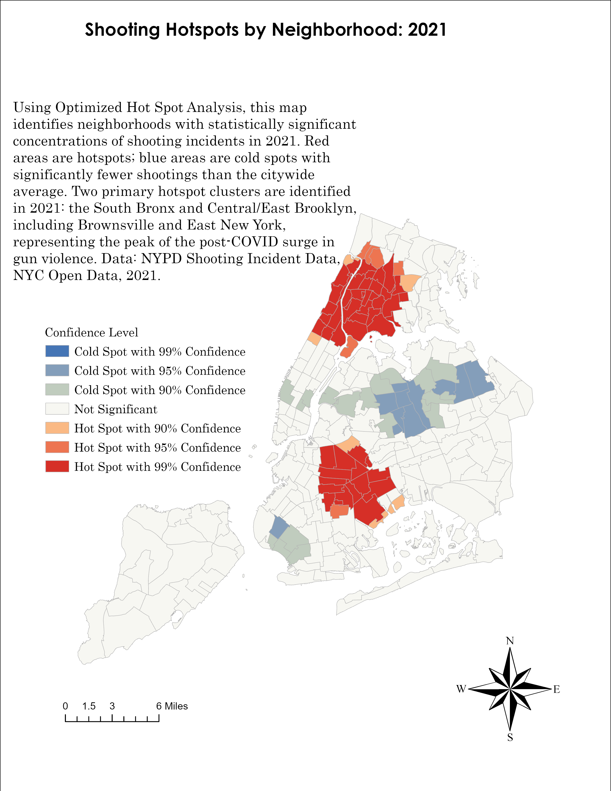
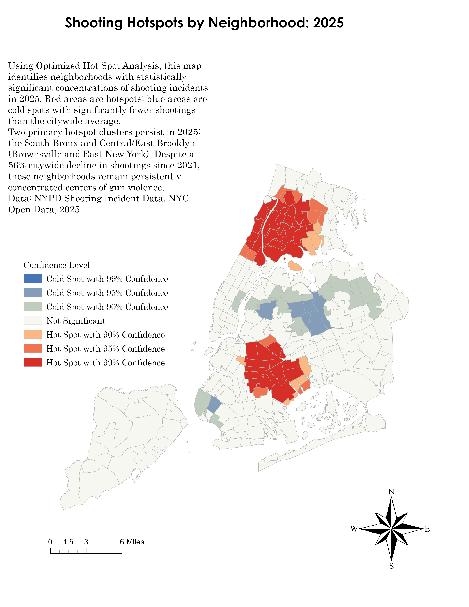

Introduction
New York City shootings declined sharply after the post-pandemic surge; however, citywide totals do not show whether that improvement was evenly distributed across neighborhoods. A citywide decline can suggest general progress while specific communities remain exposed to concentrated violence. This brief uses neighborhood-level shooting data to examine where shootings declined, where they persisted, and which neighborhoods remained relatively burdened in 2025.
The analysis uses secondary public data from the NYPD Shooting Incident Data / Shootings (2006–Present) dataset available through NYC Open Data. Shooting incidents from 2016 through 2025 were spatially assigned to New York City Neighborhood Tabulation Areas, referred to here as neighborhoods for readability, and aggregated by neighborhood and year. The primary comparison is between 2021, the post-pandemic shooting surge period, and 2025, the most recent full year of incident-level data in the project.
The central finding is that the citywide shooting decline between 2021 and 2025 was substantial; however, the benefits of that decline were unevenly distributed across neighborhoods. Total shooting incidents in the dashboard declined from 1,562 in 2021 to 681 in 2025, a decrease of approximately 56 percent. Neighborhood-level visualization can help identify where prevention and community-based support remain most needed.
Methods and Data
The research method used in this project was secondary quantitative data analysis with spatial analysis. The analysis relied on existing public administrative data collected and maintained by the New York City Police Department and made publicly available through NYC Open Data.
Each shooting incident with usable geographic coordinates was spatially assigned to a neighborhood using latitude and longitude. Once incidents were matched to neighborhoods, shooting counts were aggregated by neighborhood and year. The spatial analysis was conducted using ArcGIS Pro. Shooting records were filtered by year, mapped using their coordinates, and spatially joined to neighborhood boundaries. Optimized Hot Spot Analysis was then used to detect statistically significant clusters of high and low shooting counts.
The interactive dashboard used the same secondary dataset and neighborhood boundaries to conduct a comparative year-to-year analysis. For each neighborhood, shooting incidents were counted separately for the selected baseline year and comparison year. The dashboard calculated the absolute change between years, the neighborhood’s share of citywide shootings in each year, and the change in that citywide share. Each neighborhood was then classified as fewer shootings, more shootings, little or no change, or lower count with a larger share of citywide shootings.
To calculate each neighborhood’s share of citywide shootings, all shooting incidents were first totaled citywide for the selected baseline year and comparison year. Each neighborhood’s shooting count was then divided by the citywide shooting total for the same year and converted into a percentage. For example, a neighborhood with 25 shootings in a year when the citywide total was 681 would account for approximately 3.67 percent of citywide shootings.
Key Findings from the 2021–2025 Neighborhood Comparison
The 2021–2025 comparison shows a sharp overall decline in shooting incidents, but the neighborhood-level pattern is more complicated than the citywide trend alone suggests. The dashboard classified 93 neighborhoods as having fewer shootings, 34 as having more shootings, 87 as having little or no change, and 47 as having lower counts but a larger share of citywide shootings.
Several high-count neighborhoods improved substantially. Harlem North declined from 52 shootings in 2021 to 15 in 2025. Bedford-Stuyvesant East declined from 46 to 14, while Crown Heights North declined from 38 to 12. East Harlem North also declined from 37 to 11. These reductions suggest meaningful improvement, but lower counts should not be equated with full recovery. Fagan and Wilkinson’s (1998) research emphasizes that gun violence is connected to an “ecology of danger,” where exposure to violence shapes fear, identity, neighborhood trust, and perceptions of safety.
Other neighborhoods improved in absolute terms but remained relatively more burdened in the citywide distribution. Brownsville fell from 52 shootings in 2021 to 25 in 2025; however, its share of citywide shootings increased from about 3.33 percent to 3.67 percent. Mott Haven–Port Morris declined from 42 to 20, while its share increased from about 2.69 percent to 2.94 percent. Soundview-Bruckner-Bronx River declined only slightly, from 20 to 19, whereas its citywide share increased from about 1.28 percent to 2.79 percent. These examples show why neighborhood share matters when assessing whether a neighborhood can improve numerically while becoming more central to the remaining geography of gun violence.
Use the interactive map and scatter plot dashboard to compare baseline and comparison years, filter by borough or change category, and hover over neighborhoods for shooting change, citywide share shift, race/ethnicity population context, and employment context.

Demographic Context and Structural Inequality
Several neighborhoods that remained relatively burdened in 2025 were majority Black and/or Latino. These demographic data are included as neighborhood context, not as victim or offender characteristics, and help show how unequal exposure to gun violence overlaps with structural inequality.
| Neighborhood | % Black | % Hispanic/Latino |
|---|---|---|
| Brownsville | 72.9 | 23.0 |
| East New York | 64.8 | 28.9 |
| Mott Haven–Port Morris | 28.0 | 68.8 |
| Soundview-Bruckner | 21.5 | 63.9 |
| Central Harlem North–Polo Grounds | 58.7 | 25.8 |
| Crown Heights North | 64.8 | 12.4 |
Note. Percentages describe neighborhood population context, not victim or offender characteristics.
The purpose of including demographic context is to show unequal exposure to public safety harm. The question is not why residents are “more criminal.” The better question is why certain Black and Latino neighborhoods endure disproportionate exposure to violence even after citywide shootings decline.
This interpretation is consistent with Shaw and McKay’s social disorganization framework, which connects crime patterns to structural neighborhood conditions such as poverty, residential instability, weakened institutions, and reduced informal social control (Shaw & McKay, 1942). In this framework, persistent shooting exposure is best understood as a place-based outcome of unequal neighborhood conditions and uneven access to safety, not as a racial or cultural explanation for violence. Knorre and MacDonald (2023) found that shootings are spatially concentrated and connected to concentrated disadvantage. Sarasa-Cabezuelo (2023) found that gun crime in New York City is not homogeneous and varies by district.
Spatial Concentration and Neighborhood-Level Harm
Optimized Hot Spot Analysis reinforces the dashboard’s findings by showing that shootings are not randomly distributed across the city. Instead, statistically significant clusters remain visible in particular locations. This matters because neighborhood-level harm can persist even when citywide shooting totals decline.

If shootings remain clustered in specific neighborhoods, then a citywide decline should not be treated as a complete measure of progress. Persistent clustering suggests that some communities continue to experience disproportionate exposure to harm and may require further research.
Limitations and Conclusion
This brief has several limitations. First, the analysis relies on reported and recorded shooting incidents and does not capture fear, trauma, retaliation risk, residents’ perceptions of safety, unreported violence, or informal community support networks. Second, it analyzes shooting incidents rather than all shooting victims. A single shooting incident can involve more than one person harmed, so incident counts may understate the total number of people injured or killed by gunfire. Third, Neighborhood Tabulation Areas are administrative geographies that may not accurately represent how residents perceive neighborhood boundaries or smaller blocks and corridors where violence may be concentrated. Fourth, demographic indicators provide neighborhood population context, not victim or offender characteristics.
Future research should compare incident-level and victim-level data, examine rates as well as counts, and incorporate community knowledge from residents, service providers, violence interrupters, and people directly affected by gun violence. It should also examine whether persistent shooting exposure overlaps with gaps in prevention infrastructure, trauma services, employment access, and youth supports. A stronger public safety analysis should combine quantitative data with lived experience and local expertise so that neighborhood-level findings do not become abstract or punitive.
A citywide decline in shootings is important, but it is not enough. Public safety analysis must also ask where violence remains concentrated, which neighborhoods experience improvement, and whether reductions are equitably distributed. The dashboard and hotspot maps described in this brief show how public data can be translated into a research tool that makes uneven public safety gains visible. The central lesson is that data should clarify harm without flattening community experience or reinforcing unnecessary criminalization.
References
Butts, J. A., & Espinobarros, R. A. (2021). Shooting trends vary across areas of New York City. John Jay College Research and Evaluation Center.
Fagan, J., & Wilkinson, D. L. (1998). Guns, youth violence, and social identity in inner cities. Crime and Justice, 24, 105–188.
Knorre, A., & MacDonald, J. (2023). Shootings and land use. Journal of Criminal Justice, 86, 102068.
Sarasa-Cabezuelo, A. (2023). Analysis of gun crimes in New York City. Sci, 5(2), 18.
Shaw, C. R., & McKay, H. D. (1942). Juvenile delinquency and urban areas. University of Chicago Press.